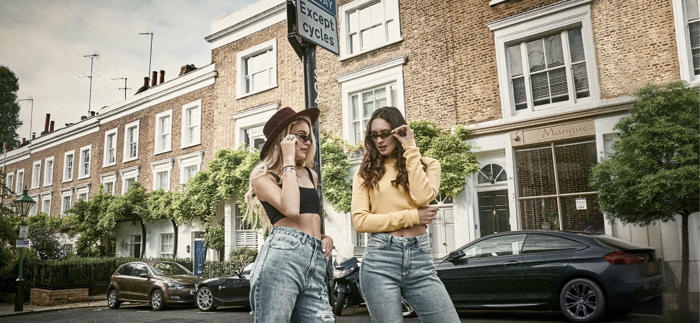

Hair Extension Salon in Manchester
In the heart of the Northern Quarter, 5 minutes from Piccadilly Station.
- 49 PiccadillyNorthern Quarter, M1 2AP
- Tuesday to Saturday10am to 6.30pm
- Open since 2010Serving the whole of the North
- 100% Russian hairColour matched without dye
The Manchester salon
The North's Home of Russian Hair
On the back of the success of our London salon, and with so many clients travelling from the North, we opened our Manchester hair extension salon in 2010. It is conveniently located in the Northern Quarter, just a 5 minute walk from Piccadilly Station, so it easily serves hair extension clients from across Manchester, Cheshire, Liverpool, Leeds and Yorkshire. It is also where every one of our clip in extensions is made by hand.
What we offer in Manchester
Every Method, Under One Roof
Micro Ring Hair Extensions
A semi permanent solution where natural hair is attached to the extension hair using tiny copper rings. A cost effective system compared to glued in extensions, as 100 percent of the hair can be reused. Discover micro rings.
Tape Hair Extensions
Versatile, undetectable and reusable. Our tapes are made in house using the same Russian hair as our salon applied extensions, with colour achieved not with dye but by blending multiple shades of natural hair into each tape. Discover tapes.
Clip In Hair Extensions
Every clip in we sell is handmade here in the Manchester salon using the finest Russian hair. Hand tied wefts can be attached more securely and made slimmer than machine wefts, which means more comfort, less shedding and a much longer life. Discover clip ins.
Weft Hair Extensions
Machine and hand tied Russian hair wefts fitted with micro rings, no glue and no heat, for fuller, thicker hair with natural movement. Discover wefts.
Clip In Braids and Ponytails
A great way to update a hairstyle or transform your look in an instant with the snap of a clip. Our braids use a special weaving technique that combines shorter Russian hair into longer lengths, allowing a lower price point. Discover braids and ponytails.
Hair Toppers
Lightweight hairpieces that blend with your natural hair to add volume and cover thinning areas. A natural looking, confidence boosting solution for women experiencing hair loss. Discover hair toppers.
Medical Wigs
Specially designed for those experiencing hair loss from conditions or treatments. Breathable, natural looking bases and the finest Russian hair, custom fitted for comfort, security and a realistic appearance. Discover medical wigs.
Wedding hair
Manchester Wedding Hair
It is your wedding day, the day when it matters more than ever that you look and feel beautiful, because this day will be encapsulated in people's memories and photographs. Long wedding hairstyles remain the favourite of most brides, and hair extensions are the perfect way to inject body, length and fullness into your hair. A visit to us can be done as little as 3 hours before the start of your big day, so as you walk down the aisle you will know all eyes are fixated on you.
Client reviews
What Our Clients Say
Visiting Tatiana was an amazing experience. I firstly attended a consultation appointment and 8 weeks later, my new hair was ready for collection. The colour match was perfect, all the staff were totally professional, knowledgeable of their products and engaging at both appointments. Nothing was too much trouble.
Debra Appleby
I have visited the salon for a piece of clip in extension and have to say the quality of the hair used is absolutely amazing. I got a clip in braid in the end and it was super well made with a sturdy clip as well as long, soft hair that is hand blended and perfectly matches my colour.
Angela Lei
I have been coming here for over two years now and I can honestly say it is the best decision I have ever made for my hair. The quality of the extensions is amazing, they always blend beautifully and feel so natural. The team is incredibly professional, friendly, and genuinely care about getting everything just right.
Funda Yahioglu
Visit us
Finding the Manchester Salon
- Address
- Salon 505, 5th floor, 49 Piccadilly, Manchester, M1 2AP. In the Northern Quarter, a 5 minute walk from Piccadilly Train Station and Piccadilly Gardens.
- Opening hours
- Tuesday to Saturday, 10am to 6.30pm. Closed Sunday and Monday.
- Telephone
- +44 (0) 161 236 4467, or WhatsApp +44 (0) 771 439 2999.
- manchester@tatianakarelina.co.uk. We always respond within 24 hours.
- Parking
- Free parking is available a 2 minute walk away at 1 Port Street. Contact the salon at the time of booking to confirm a parking space. Meter parking is located on Port Street, Hilton Street and Newton Street.
- Before you book
- Consultations are free, in the salon or by video call. A £200 deposit is required to book a fitting. For custom pieces such as clip ins, toppers and wigs, a 50 percent deposit is required with the balance due on fitting.
Everything you want to know
Frequently Asked Questions
Why is Tatiana Karelina the leading hair extension salon in Manchester?
We are one of the very few salons in the North specialising exclusively in Russian hair extensions. Over 18 years we have developed a proprietary colour blending process and stock one of the largest inventories of Russian hair in the UK, which allows us to offer same day consultations and fittings with perfect matches for colour, texture and length. Our clip ins are handmade here in the Manchester salon.
Where is the Manchester salon?
You will find us at Salon 505, 49 Piccadilly, Manchester M1 2AP, on the 5th floor, in the Northern Quarter just a 5 minute walk from Piccadilly Station and Piccadilly Gardens. We are open Tuesday to Saturday, 10am to 6.30pm.
Do you offer same day fittings in Manchester?
Yes. Because we keep a large inventory of Russian hair in the salon, your fitting can often take place on the same day as your consultation. For custom pieces such as clip ins, toppers and wigs, a 50 percent deposit is required with the balance due on fitting.
What services are available at the Manchester salon?
Micro ring, tape, clip in and weft hair extensions, clip in braids and ponytails, custom hair toppers and medical wigs. Every clip in we sell is handmade in this salon. Consultations are free, in the salon or by video call.
Is there parking near the salon?
Yes. Free parking is available a 2 minute walk away at 1 Port Street, contact the salon at the time of booking to confirm a space. Meter parking is located on Port Street, Hilton Street and Newton Street.
Can I have my hair done for my wedding?
Yes. Hair extensions are the perfect way to add body, length and fullness for your wedding day, and a visit can be done as little as 3 hours before the start of your big day.
Visit Us in the Northern Quarter
Book a free consultation at 49 Piccadilly and discover what genuine Russian hair, matched to your exact colour and texture, can do for your confidence. Same day fittings are often available.